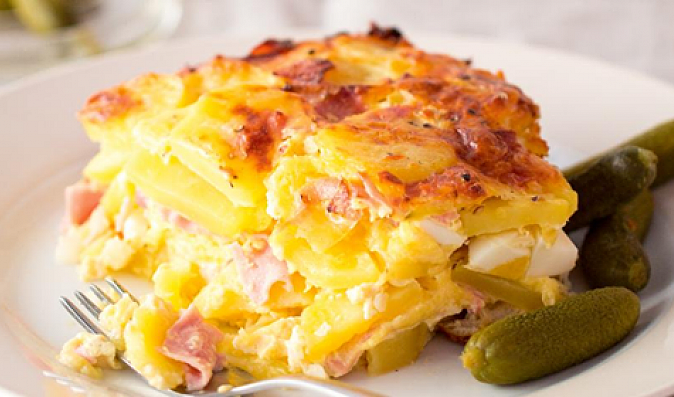

Jednoduché a syté zapečené brambory s uzeným masem, sýrem a vejci – klasika české kuchyně.
Zapékací misku vymažeme sádlem. Troubu předehřejeme na 180 °C.
Brambory oloupeme a nakrájíme na hrubší plátky nebo kostky. Cibuli nakrájíme najemno, maso na kostičky a sýr nastrouháme.
Do zapékací misky vrstvíme osolené brambory, cibuli, uzené maso a sýr. Poslední vrstvou by měl být sýr. Povrch osolíme a opepříme.
Pečeme 30 minut. Poté vše zalijeme rozšlehanými vejci a pečeme dalších 30 minut dozlatova.
Podáváme teplé, ideálně s kyselou okurkou nebo zeleninovým salátem.